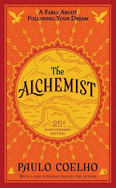

BOOK GALLERY
hello
The Alchemist

The Alchemist (Coelho) Summary
The Alchemist tells the story of a young shepherd named Santiago who is able to find a treasure beyond his
wildest dreams. Along the way, he learns to listen to his heart and, more importantly, realizes that his
dreams, or his Personal Legend, are not just his but part of the Soul of the Universe.
Santiago is a humble shepherd whose desires are few–he wants to be free to roam with his sheep, to have some
wine in his wineskin and a book in his bag. Fate intervenes, however, in the form of the recurring dream
Read more...
Adventures of Huckleberry Finn
.jpg)
The Adventures of Huckleberry Finn is often considered Twain's greatest masterpiece. Combining his raw humor
and startlingly mature material, Twain developed a novel that directly attacked many of the traditions the
South held dear at the time of its publication. Huckleberry Finn is the main character, and through his
eyes, the reader sees and judges the South, its faults, and its redeeming qualities. Huck's companion Jim, a
runaway slave, provides friendship and protection while the two journey along the Mississippi on their
raft.Read more...
Inside George Orwell
.jpg)
‘Inside the Whale’ is a long essay by George Orwell (1903-50), published in 1940. The title of Orwell’s essay
refers to the biblical Book of Jonah, in which the prophet Jonah is swallowed by a great fish (although, as
Orwell notes, received wisdom tends to substitute ‘whale’ for ‘fish’).
The essay is one of Orwell’s most significant contributions to the debate about contemporary literature in
the 1930s. Orwell’s argument is that authors of the 1930s who take refuge inside the comforting prison of
the metaphorical ‘whale’, and seek to reflect the world Read more...
Animal Farm
.jpg)
One night, all the animals at Mr. Jones' Manor Farm assemble in a barn to hear old Major, a pig, describe a
dream he had about a world where all animals live free from the tyranny of their human masters. old Major
dies soon after the meeting, but the animals — inspired by his philosophy of Animalism — plot a rebellion
against Jones. Two pigs, Snowball and Napoleon, prove themselves important figures and planners of this
dangerous enterprise. When Jones forgets to feed the animals, the revolution occurs, and Jones and his men
are chased off the farm.Read more...
Aesop's Fables
.jpg)
Aesop’s Fables is the name given to a collection of short, moralistic stories attributed to Aesop, a Thracian
wise man who spent most of his life in slavery on the island Samos. The stories each contain hybrids of
myth, legend, and social parable, reframing many elements from the oral tradition within Aesop’s didactic
moral universe. There are 725 known parables in all, which were told roughly between 620 and 564 BC, but not
published at their onset due to their verbal nature.
Most of Aesop’s fables feature personified animals, which generally have a one-to-oneRead
more...